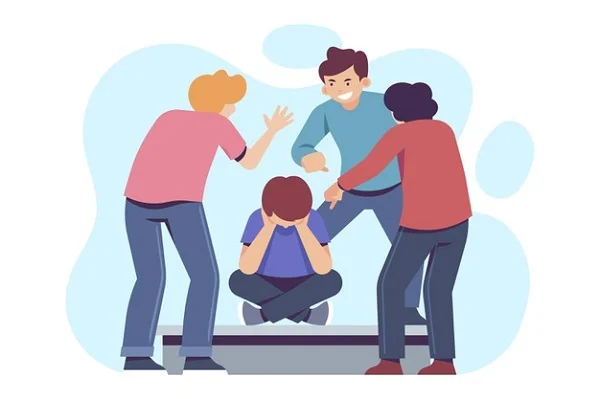

Sobre El Sitio Web
En escuelas diferentes del mundo, hay numerosas formas de Acoso Escolar. Es una a problema grande y significante a mi, y las estudiantes de mi escuela. Este sitio tiene como objetivo educar estudiantes sobre el tema, y crear conciencia sobre la problema. ¡Compartir el mensaje con tus amigos, profesores, seres queridoes, y mas!
La Entrevista con Arush Nath
Hize una entrevista con Arush Nath, el presidente de nuestro conseja estudiantil. El sabe mucho sobre la problema, con informacion importante.
- ¿Que crees sobre las estratagias de evitar acoso escolar?
- "Necesitamos crear reglas para este problema, y decir a los alumnos que hay graves consecuencias para cualquier acto de intimidación. Puede ser una reducción de notas en examenes, una suspensión, o más. Debemos decir a los alumnos que está prohibido. Tiempo con un profesores para terapia, puede ser bueno, y también sería útil tanto para el agresor como para la víctima, además de educar mejor a la escuela sobre el problema."
- Ves bullying en Pathways? Donde? Que tipo?
- "No he visto casos graves de acoso escolar, aunque mis amigos han dicho sobre estos casos. Por eso, yo creo que es un tema de gran prioridad. Se trata sobre todo de acoso verbal y físico en nuestro colegio."
- Sufres acoso escolar en el presente o pasado? Eres una victima de esta problema?
- "Afortunadamente, no, porque tengo amigos utíles. Aunque, yo comprendo bien el tema por experiencias con otros amigos."